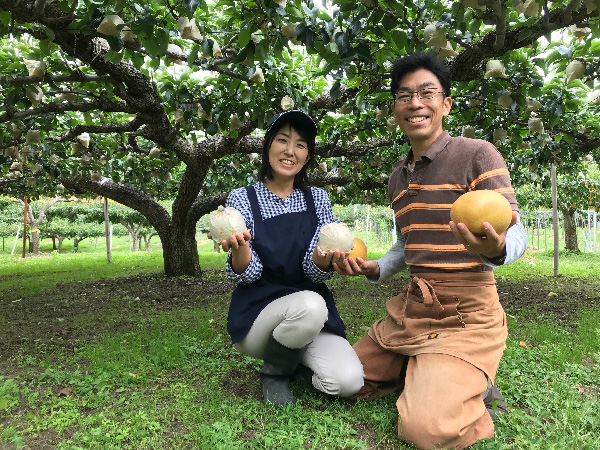

FURUSATO NOZEI
ふるさと納税
上の山彩果園の梨は、福島県郡山市のふるさと納税返礼品としてお選びいただけます。磐梯熱海の自然の中で丹精込めて育てた自慢の梨を、全国のみなさまにお届けしています。
選ばれる理由
返礼品としての上の山彩果園
自然豊かな環境で栽培
磐梯熱海の恵まれた自然環境の中、土づくりからこだわり、のびのびと育てています。
みどり認定・GAP認証取得
安心して召し上がっていただけるよう認証を取得し、安全な栽培に努めています。
収穫したての美味しさ
完熟の見極めを大切に、もぎたての梨を返礼品としてお届けします。

郡山市の返礼品として
幸水、豊水、二十世紀、あきづき、ラ・フランスなど、その時期いちばん美味しい梨を返礼品としてお届けしています。ご家庭用はもちろん、大切な方への贈り物としても喜ばれています。
ONLINE PORTALS
ご利用いただけるふるさと納税サイト
💡
各サイトの検索欄で「上の山彩果園」と入力すると返礼品ページが見つかります。掲載自治体は福島県郡山市です。